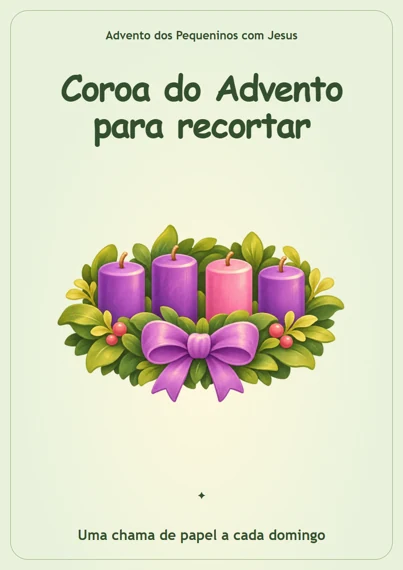
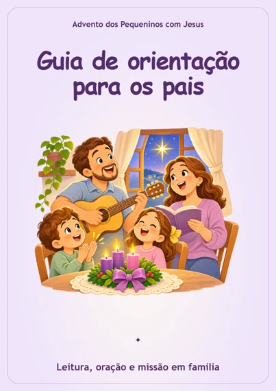
Incluídos no Plano Básico
Coroa recortável e guia para os pais
Montem a coroa com quatro velas de papel e acrescentem uma chama a cada domingo do Advento. O guia explica como conduzir a rotina com os pequenos.
Advento dos Pequeninos com Jesus
25 cartões católicos ilustrados para viver o Advento em família
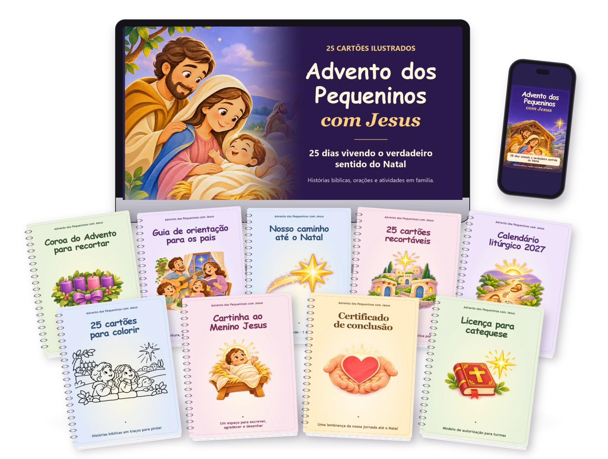
Histórias bíblicas claras e fáceis de entender. Cada cartão traz uma passagem contada em linguagem infantil, uma oração curta e uma atividade simples, para que a criança entenda a mensagem do dia e a coloque em prática com a família.
Quero viver esse AdventoA partir de R$ 17,90 · Acesso imediato · Garantia de 7 dias
Demonstração
Abra os cartões e descubra como a história, a oração e a missão aparecem na prática.
Dia 1 · Isaías 9,5
O primeiro cartão apresenta a promessa de um Salvador. A missão convida a família a conversar sobre a Coroa do Advento e desenhar a Estrela de Belém.
Uma passagem bíblica contada com palavras que a criança consegue acompanhar.
Uma oração curtinha para rezar juntos e abrir espaço para agradecimentos e pedidos.
Um gesto concreto, como ajudar em casa, escrever uma cartinha ou preparar o presépio.
O Advento na vida real
Escolham um horário que já faça parte da rotina, como depois do jantar. O cartão guia o encontro do começo ao fim.
Se um dia passar, retomem no dia seguinte. O guia traz ideias para adaptar o encontro à idade da criança.


Incluídos no Plano Básico
Montem a coroa com quatro velas de papel e acrescentem uma chama a cada domingo do Advento. O guia explica como conduzir a rotina com os pequenos.
Só no Plano Completo
Veja o que o Plano Completo acrescenta à jornada de 25 dias.
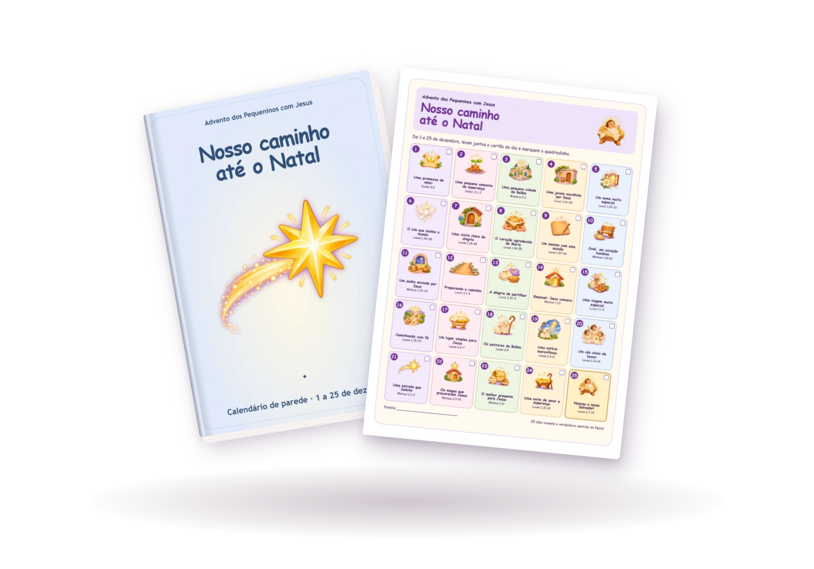
Uma folha A4 com os 25 dias ilustrados. Coloque na parede ou na geladeira e deixe a criança marcar o quadradinho depois da leitura de cada cartão.
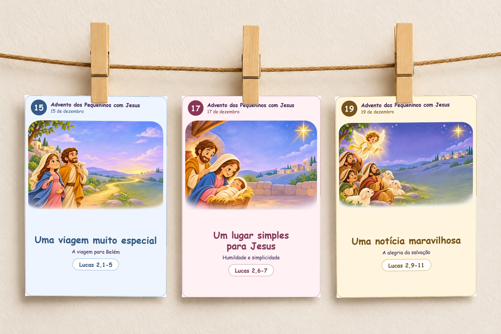
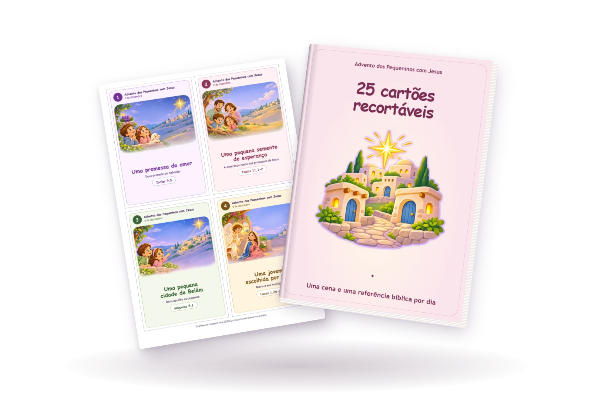
Um cartão pequeno para cada dia, com uma cena ilustrada e sua referência bíblica. Imprima quatro por folha e pendure os cartões num varal no cantinho de oração.
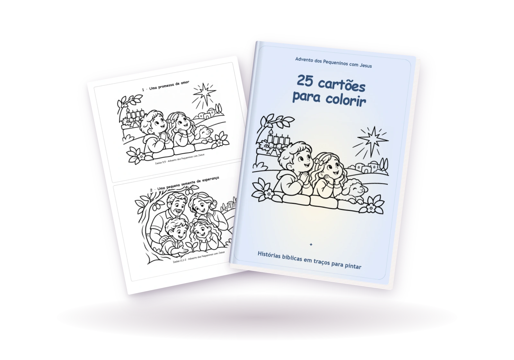
Uma cena por dia, com contornos prontos para pintar e a referência bíblica correspondente. Imprima dois cartões por folha A4.
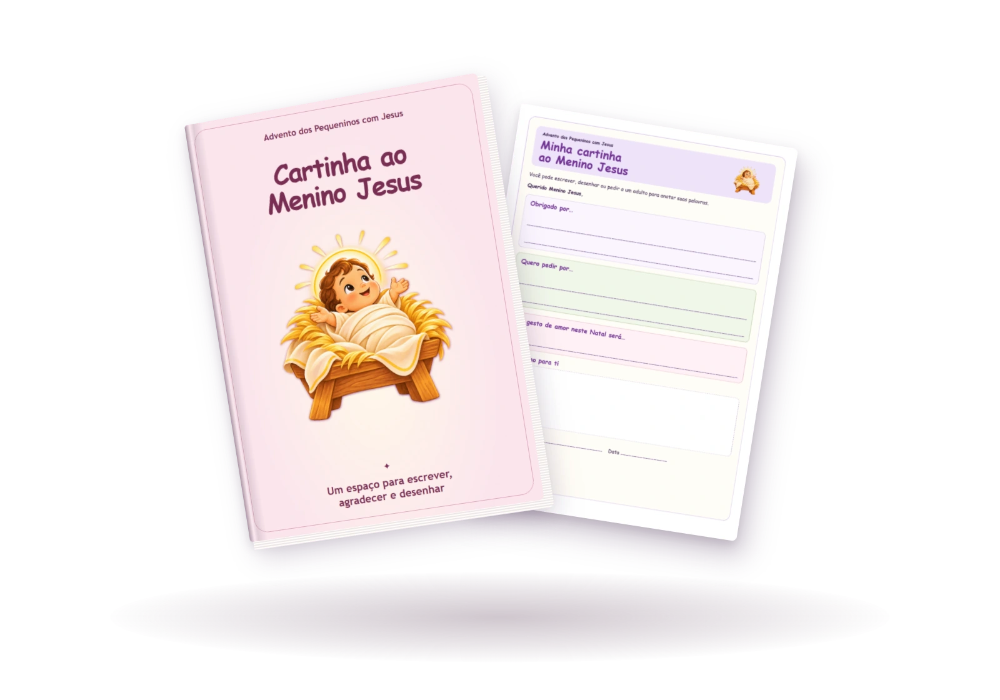
Uma folha com espaços para agradecer, fazer um pedido, escolher um gesto de amor e desenhar. Os pequenos podem ditar a cartinha a um adulto.
Uma lembrança da caminhada dos 25 dias. Preencha o nome da criança, a data e a assinatura da família ou do catequista.
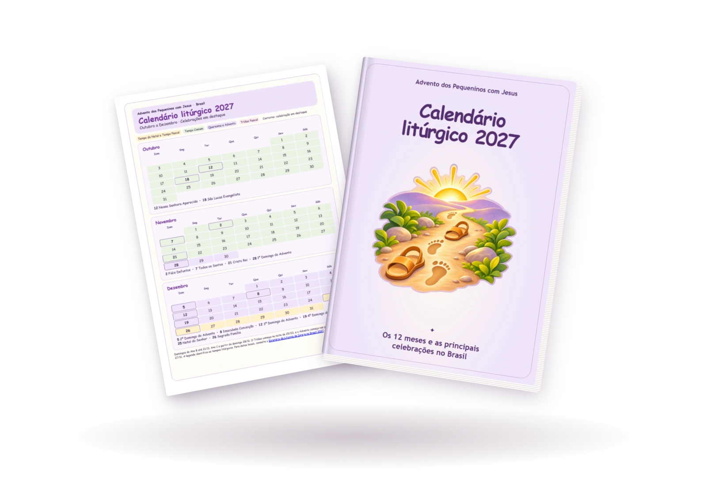
Os 12 meses do ano em quatro folhas A4, com os tempos litúrgicos e as principais celebrações católicas no Brasil.
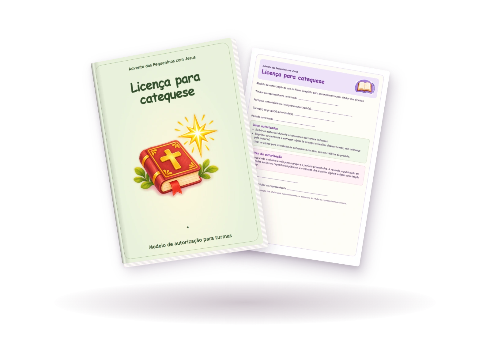
Catequista pode imprimir e distribuir cópias para a sua turma. É só preencher o nome da turma e da paróquia na autorização.
Escolha seu kit
Os dois planos trazem a jornada completa de 25 dias. Escolha quais materiais quer levar para a sua rotina.
Para viver a jornada em família, com tudo que você precisa para começar.
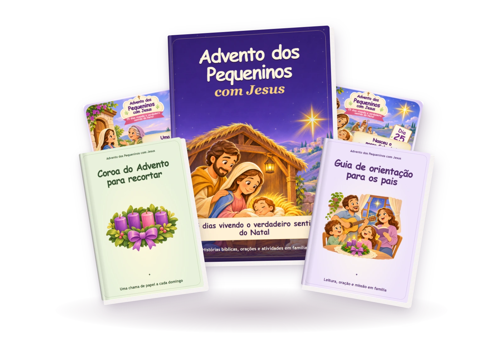
R$ 17,90
Compra única · Material digital
Tudo do Básico + 7 bônus exclusivos
Para ampliar a experiência com atividades para colorir, celebrar e usar na catequese.
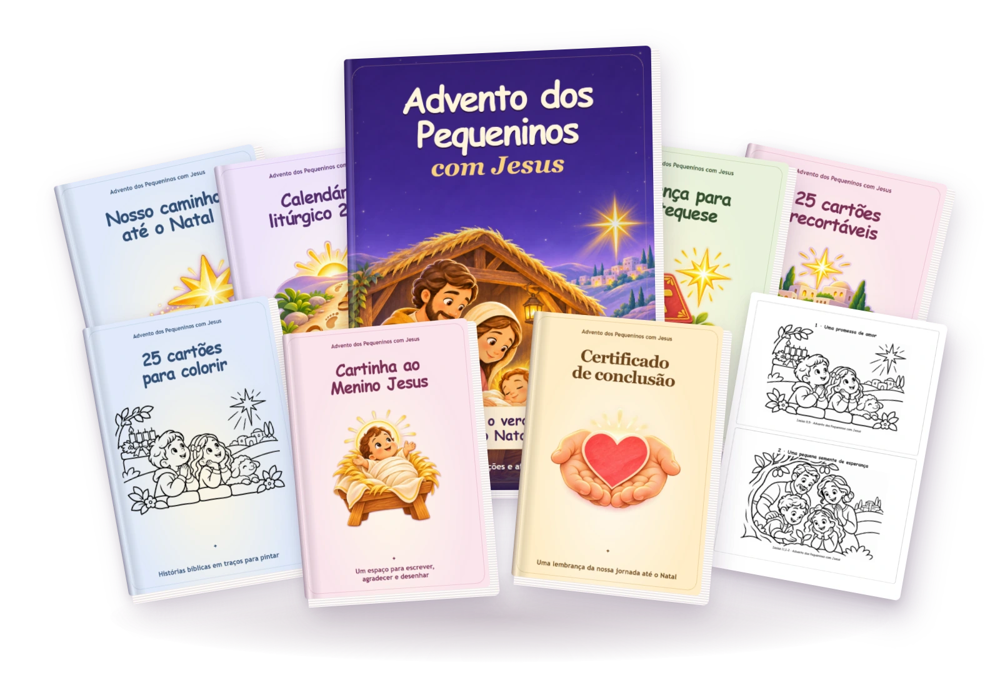
R$ 27,90
Compra única · Material digital
Só R$ 10 a mais que o Básico para levar os 7 bônus
Acesso imediato por e-mail após a confirmação do pagamento · Pix ou cartão · Arquivos PDF para imprimir em A4
Se o material não for o que você esperava, é só pedir o reembolso em até 7 dias após a compra e devolvemos 100% do valor.
Perguntas frequentes
Logo depois da confirmação do pagamento você recebe por e-mail o link para baixar os arquivos. No Pix, a liberação costuma levar poucos minutos. Confira também a caixa de spam e a aba Promoções.
Pix ou cartão de crédito, em compra única. Não é assinatura e não há cobrança recorrente.
Foi pensado para crianças de 3 a 10 anos com acompanhamento de um adulto. Mostre as imagens e conte a história em poucas frases para os menores. Os maiores podem ler um trecho e procurar a passagem na Bíblia.
O produto é digital. Os materiais são arquivos PDF para abrir no celular ou computador e imprimir em papel A4.
Imprima só o necessário para cada encontro ou leia o cartão na tela. Para as atividades de recorte, imprima as folhas correspondentes em tamanho real (100%).
Os cartões vão de 1 a 25 de dezembro. A coroa segue os quatro domingos do Advento, inclusive quando o primeiro cai em novembro.
Dá, sim. Comece pelo cartão do dia de hoje e, se quiser, retome os dias anteriores aos poucos, lendo dois cartões no mesmo encontro. O importante é viver a preparação para o Natal em família.
Pode. Imprima quantas vezes quiser para uso da sua família. Para turmas de catequese, use a licença incluída no Plano Completo.
O Básico inclui 25 cartões ilustrados, a coroa recortável e o guia para os pais. O Completo inclui tudo isso e mais sete bônus: calendário de parede, cartões recortáveis, cartões para colorir, cartinha, certificado, calendário litúrgico 2027 e licença de uso para catequese.
Sim, com o Plano Completo. Ele inclui a licença de uso para catequese: preencha o nome da turma e da paróquia e imprima cópias para os seus catequizandos.
Você tem 7 dias de garantia. Se o material não for o que esperava, peça o reembolso pelo e-mail de contato e devolvemos 100% do valor.